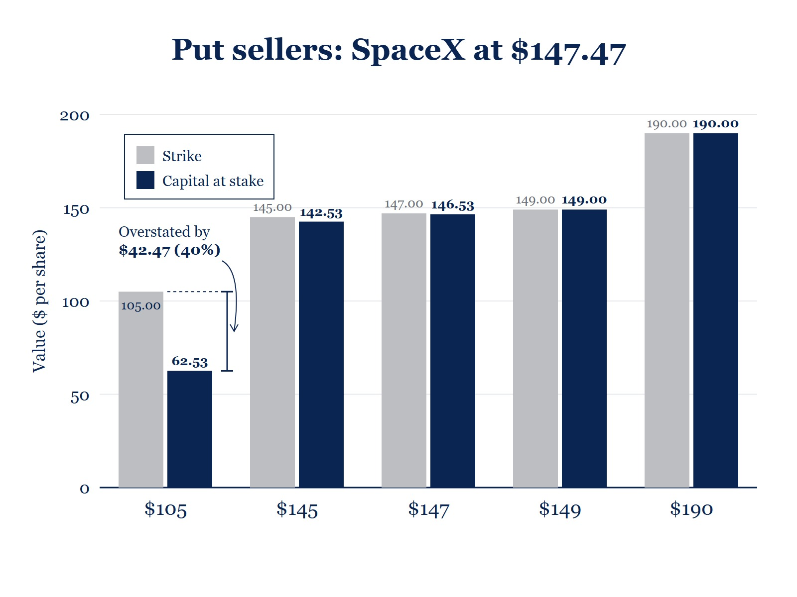
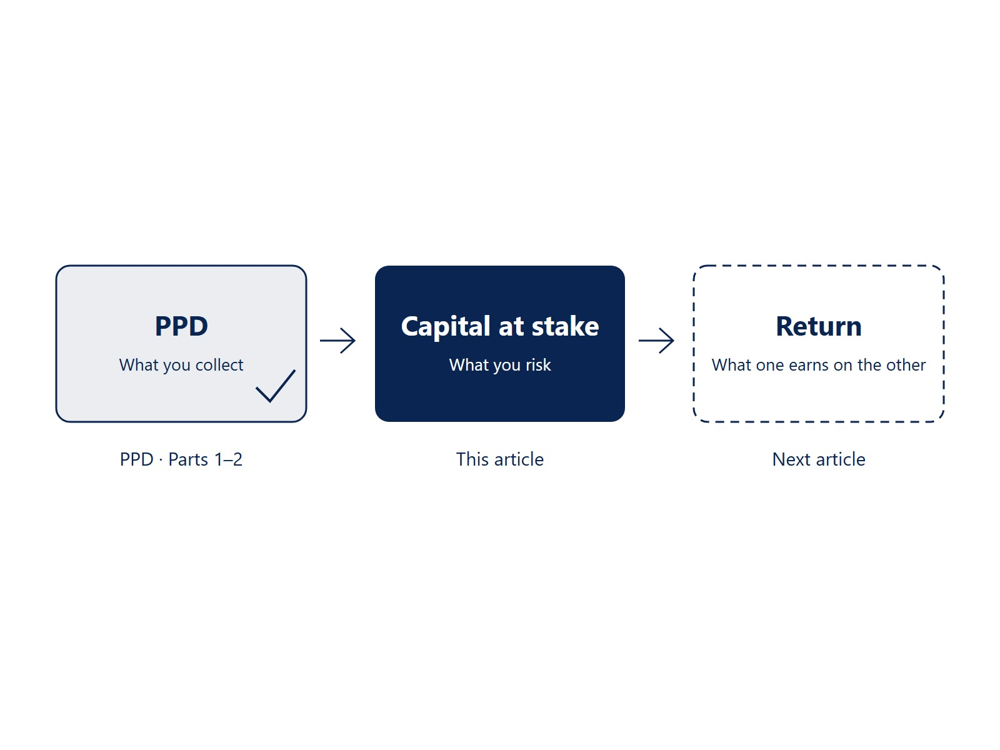

The Number I Never Questioned
When I came back to selling cash-secured puts and covered calls, I did what everyone else does. I measured each trade against one number: the strike price.
Sell a $145 put? That's $145 of capital per share. Sell a $105 call against shares I own? That's $105 of capital.
And like most sellers, I didn't stop at the strike. I folded in the premium. For a cash-secured put, I'd subtract it: sell a $145 put for $3 and my "real" number was $142, my break-even. For a covered call, I'd add it: sell a $105 call for $3 and I was effectively selling my shares at $108. It felt precise. Every screener, spreadsheet and broker screen I used worked the same way, so I followed along.
Hold on to that habit for a moment. I'll come back to the premium later and explain why my new number leaves it out.
It hasn't been a long road: about fourteen months and nearly 3,900 short-option trades, split between cash-secured puts and covered calls. The number isn't the point. The repetition is. Somewhere along the way, it does its work, and you start noticing when a number doesn't quite add up.
For me, that happened one afternoon when I looked at two positions on the same stock side by side, and the strike price stopped making sense.
If you've read my two articles on Premium Per Day, PPD: A Cleaner Way to Measure What You're Actually Collecting Per Day and PPD Part Two: Putting the Number to Work, this is the other half of the picture. PPD measures what you collect, and it leaves capital out on purpose. This article is about the capital. And just as theta can look best at the very moment a position is at its worst, the strike price overstates what you have at stake in exactly the puts that are doing best.
One Stock, One Day, Ten Positions
Here's the setup, using a hypothetical company, Orbital Dynamics (ORBD). It is trading at $147.47. The options expire on October 23, 2026, 29 days away.
Now picture ten sellers. Five sell cash-secured puts and five sell covered calls, each at a different strike. Some strikes are far below the stock price, some are close to it, and some are far above it. When each trade was opened doesn't matter here. What matters is where the stock is today.
On the strike-price method, each of them has exactly the strike at stake. But ask a simpler question: if you were assigned at the strike today, what would you actually be putting on the line? The answers are very different.
The Idea: Capital Actually at Stake
Capital at stake is a snapshot. It's what you would really have tied up if the contract were settled at the strike against today's stock price.
It needs only two inputs, both per share:
- Strike: the price in the contract. It doesn't change.
- Stock price: the last traded price of the stock right now. It moves.
It applies to single-leg cash-secured puts and covered calls that are already open. Spreads aren't covered here. Once a position has expired (DTE below zero), capital at stake no longer applies: treat it as zero and leave it out of any averages, the same rule the PPD guide uses for expired positions.
For a cash-secured put, you've promised to buy shares at the strike.
- If the stock is below the strike, you'd pay the full strike. Your capital at stake is the strike.
- If the stock is above the strike, you'd buy at the strike and could sell straight away at the higher market price. That built-in gain comes off what you have at stake.
Capital at stake = MIN( Strike, MAX( 0, 2 × Strike − Stock price ) )
In words: never more than the strike, never less than zero, and in between, the strike minus the built-in gain. Capital at stake can never read below zero, and a stock's price can never fall below zero either, so the worst case for a cash-secured put is always the full strike, never more.
For a covered call, you've promised to hand over your shares at the strike.
- If the stock is below the strike, your commitment is the strike price. Your capital at stake is the strike.
- If the stock is above the strike, the shares you'd give up are worth the market price, not the strike. Your capital at stake is the stock price.
Capital at stake = MAX( Stock price, Strike )
In words: whichever is higher, the strike or what the shares are worth today.
That's it. Let's see what it does to our ten sellers.

Figure 1. Same stock. Opposite error.
The Put Sellers
| Strike | Strike vs. stock | Capital by strike | Capital actually at stake | Difference |
|---|---|---|---|---|
| $105.00 | 28.80% below stock | $105.00 | $62.53 | −$42.47 (−40.45%) |
| $145.00 | 1.67% below stock | $145.00 | $142.53 | −$2.47 (−1.70%) |
| $147.00 | At the money | $147.00 | $146.53 | −$0.47 (−0.32%) |
| $149.00 | 1.04% above stock | $149.00 | $149.00 | $0.00 |
| $190.00 | 28.84% above stock | $190.00 | $190.00 | $0.00 |
The best situation: the $105 put. ORBD is about $42.50 above the strike. If this seller were assigned today, they'd buy at $105.00 and could sell at $147.47 right away. Their real exposure is $62.53 per share, not $105.00. The strike-price method overstates what they have at stake by $42.47, about 40% of the strike.
Closer to the money: $145 and $147. The stock is just above the strike, so there's a small cushion: $2.47 and $0.47. The strike method is off, but only slightly.
The worst situation: the $190 put. ORBD has fallen well below the strike. This seller would pay the full $190.00 for shares trading at $147.47. Here the strike price is the capital at stake, and the old method happens to be right. The $149 put, just past the line, is the same.
So for put sellers, the better the position is doing, the more the strike method overstates what you have at risk.

Figure 2. Put sellers: the better the position, the more the strike overstates what is at risk.
The Call Sellers
| Strike | Strike vs. stock | Capital by strike | Capital actually at stake | Difference |
|---|---|---|---|---|
| $105.00 | 28.80% below stock | $105.00 | $147.47 | +$42.47 (+40.45%) |
| $145.00 | 1.67% below stock | $145.00 | $147.47 | +$2.47 (+1.70%) |
| $147.00 | At the money | $147.00 | $147.47 | +$0.47 (+0.32%) |
| $149.00 | 1.04% above stock | $149.00 | $149.00 | $0.00 |
| $190.00 | 28.84% above stock | $190.00 | $190.00 | $0.00 |
The covered calls are the mirror image.
The most misleading situation: the $105 call. ORBD has run far past the strike. The strike method says this seller has $105.00 at stake. But the shares they'd hand over are worth $147.47 each. That's what they're really committing, and it's $42.47 more than the screen shows.
Near the money: $145 and $147. The shares are worth a little more than the strike, so the capital at stake is a little higher: $2.47 and $0.47.
Where the old method holds: $149 and $190. The stock is below the strike, so the seller's commitment is the strike, and the two methods agree.
So for call sellers, the further the stock runs past your strike, the more the strike method understates what you're putting on the line.
What the Two Tables Tell Us
Put them side by side and a pattern jumps out:
- The strike price is right only when the stock is at or below the strike, for puts and calls alike. That's where assignment would cost you the full strike, or where the strike is exactly what you've agreed to.
- When the stock is above the strike, it's wrong in opposite directions. It overstates the capital in a winning put and understates it in an in-the-money call.
- The gap grows with distance. It's under half a percent at the money and over 40% of the strike when the strike sits about 29% below the stock.
- The strike never changes, but capital at stake does. The strike was fixed the day you opened the trade. Capital at stake moves every time the stock does.
- The two sides treat a built-in gain differently. On the put side, it reduces what's at stake. On the call side, capital at stake never drops below the strike you've committed to, until the stock trades through it.
If you've been comparing positions by the strike, you've been comparing them on a number that ignores where the stock is today.
What Capital at Stake Is, and What It Isn't
It is a snapshot of your real exposure right now: what you'd be putting on the line if assignment happened today.
It is a fair way to compare positions against each other, on what each one really risks at this moment rather than on a price you picked weeks ago.
It isn't your margin or collateral. Your broker still holds the full strike for a cash-secured put. The $105 put still ties up $10,500 in cash per contract, even though only $62.53 per share ($6,253 per contract) is really at stake. Capital at stake measures exposure, not the cash your broker sets aside.
It isn't your maximum loss. It tells you what's on the line today, not how far the stock could fall or what you could lose if it does.
It isn't your cost basis. For a covered call, what you paid for the shares doesn't enter into it. What matters is what they're worth today, because that's what you'd hand over. In my Life360 case study, the shares I bought at $102.64 fell 43.9%, while premium cut my net cost basis to $47.97. Neither number is what the shares are worth today.
It isn't fixed. It changes every time the stock moves, and that's the point. Check it again as the stock moves; it isn't a number you set once.
It isn't a settlement forecast. Capital at stake is computed at a single instant and assumes assignment settles at that instant's stock price. In practice, an assignment or exercise notice can arrive a business day later (T+1), and the stock may have moved materially in between. The exposure you actually face can differ from the snapshot. Capital at stake is today's exposure, not tomorrow's.
One extreme worth knowing: if the stock rises to twice a put's strike or more (ORBD at $210 or higher for the $105 put), nothing is left at stake at all. Assignment at that moment would come with a gain at least as large as the strike itself.
Why I Leave the Premium Out
Earlier I admitted I used to fold the premium into the strike. You may be thinking the same thing right now: "Adjust the strike by the premium, subtracting it for a put and adding it for a call, and you get your real number."
It's a fair question, and I left the premium out on purpose. Here's why.
Premium is what you earn, not what you risk. Capital at stake and premium do different jobs. PPD tracks the premium side; capital at stake tracks the capital side. When we get to returns, the premium goes on top of the fraction and capital at stake goes on the bottom. Subtract the premium from the capital first and you count it twice: once as income, and again as less exposure. Your return would look better than it really is.
Premium-adjusted prices answer a different question. For a cash-secured put, strike minus premium is your break-even: the price below which you start losing money at expiry. For a covered call, strike plus premium is your effective selling price: the most you can get for your shares. Capital at stake tells you what's on the line right now. All of them matter, but they aren't the same number. Take the $105 put: its break-even sits a little below $105 and stays there however far ORBD rises, yet what that seller really has at stake today is $62.53. The $105 call is the mirror image: if it was sold back when ORBD was near $105, its effective selling price is a little above $105, yet the shares being handed over are worth $147.47.
Premium is already yours. Once it's collected, you keep it whatever the stock does. It doesn't grow or shrink what you still have exposed.
Covered calls make this obvious. If ORBD is at $147.47, the shares you'd hand over are worth $147.47, whatever you collected for the call.
So the premium isn't ignored. It just has a different job: it's the return, and that's where it comes in.
Coming Next: What You're Really Earning
Knowing what you actually have at stake is the foundation. The obvious next question is what you're really earning on it.
In my next article, What You're Really Earning When You Sell an Option, I'll bring the two halves together: the premium you collect, the same premium PPD tracks day by day, measured against the capital actually at stake instead of the strike. For some positions the change is small. For others, it flips which trade looks better.
That completes the stack: PPD for what you collect, capital at stake for what you risk, and return for what one earns on the other.

Figure 3. The stack.
Related
- PPD: A Cleaner Way to Measure What You're Actually Collecting Per Day
- PPD Part Two: Putting the Number to Work
- I Bought Life360 Near the Top. I Was Ready for the Fall.
Watch and Listen
- Is Theta Lying to You? The PPD Metric for Real Options Income
- Why Theta Lies About Your Option Income
- The Stop-Loss Fallacy: How to Turn a 44% Loss Into Profit With Covered Calls
Orbital Dynamics (ORBD) is a hypothetical company, and its prices are illustrative. The trading period and trade count in each article are as of its publication date. They grow from article to article, so earlier pieces show smaller figures. Examples are illustrative and exclude premium, commissions, fees and taxes. This article is educational. It describes a position-level measure the author uses in personal trading. It does not constitute a recommendation to buy or sell any security, nor a claim that any particular result is repeatable. Short options can produce losses larger than the premium received. Traders should understand the product and the margin requirements at their broker before use.